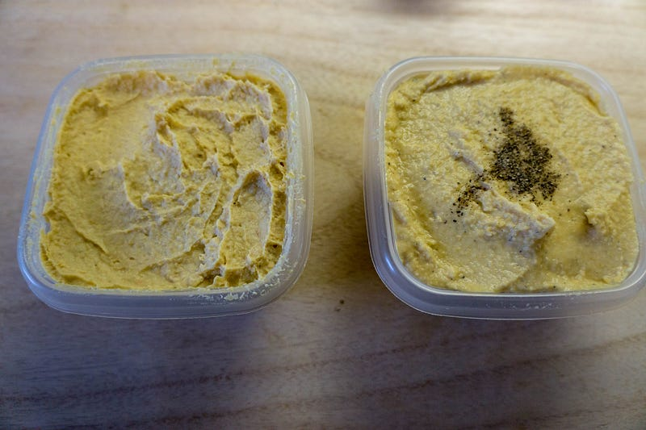
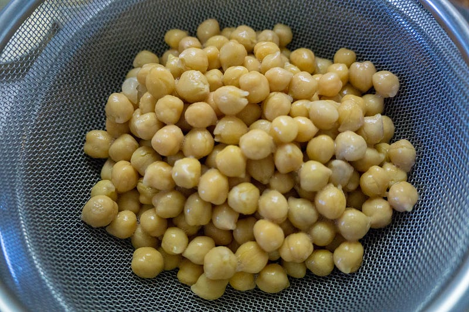
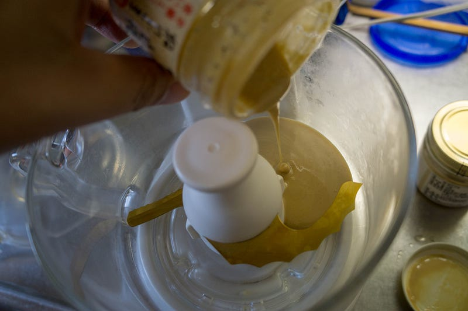
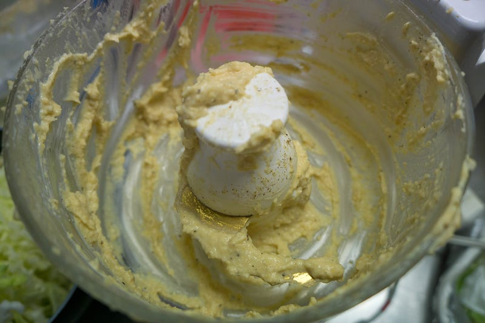
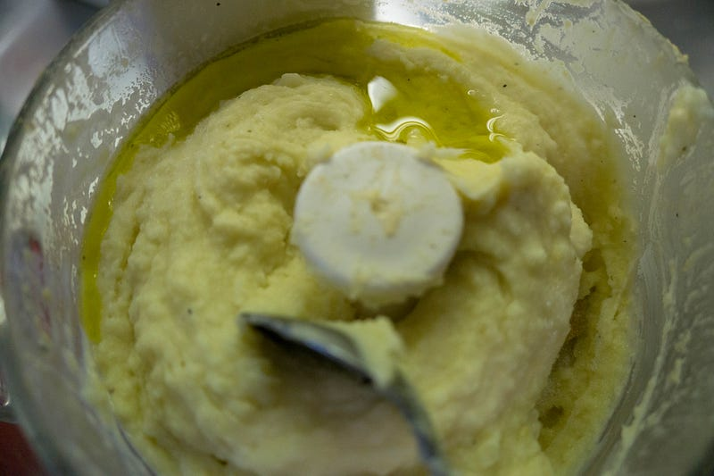
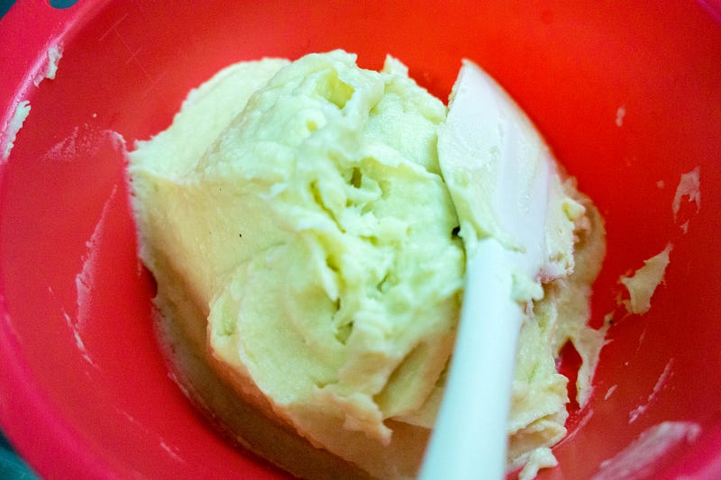
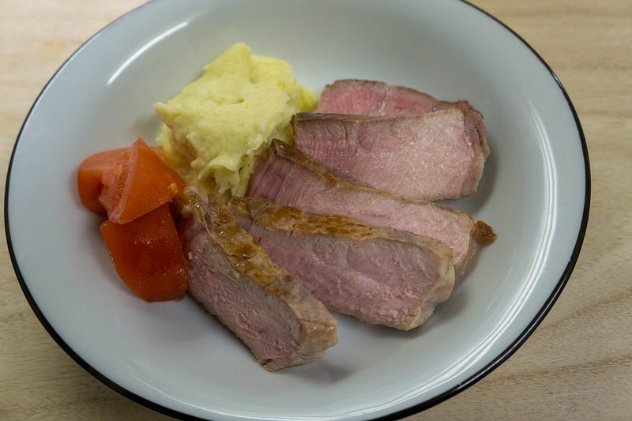

自家製フムスからの低温調理豚肉に添えるマッシュドポテト
自家製フムスからの低温調理豚肉に添えるマッシュドポテト
妻が桃屋の佃煮海苔くらいの小さい容器のフムスを買ってきた。フムスはそんな気取ったんじゃないよ、もっと気楽にたっぷりつけて食べたいよ！ということで久しぶりに作ります。

フムスを知らない方にフムスを説明すると、なんだかつまらない食べ物に聞こえてしまう。だけどフムスは手軽だし、罪悪感ないし、いろんなものにつけて美味いし、正直日本でもっと手軽に食べたい料理トップ5くらいに入る。パンやピタにつけて食べたり、生野菜をディップしたりと、わりと万能な食べ物だ。
トルコ、 ギリシア、 キプロス、 イスラエル、 パレスチナ、 ヨルダン、 レバノン、 シリア、 イラクなど 中東の広い地域で食べられている伝統的な料理である。アラビア語の表記では母音のウとオが区別されない上、もともと西欧の料理ではないた…ja.wikipedia.org
作り方はもっとも基本的なところではタヒニ（ごまペースト）とひよこ豆（チックピー・ガルバンゾー、どっちも同じ豆）、それにニンニクを潰して混ぜて塩で味付けしたらそれでおしまい。いろんなバリエーションがあって、油を使ってたり使ってなかったり、他の野菜を入れたりとかがある。
なお日本で作る分にはタヒニがないーとかそんなこと言わずに、普通に練りごまを買ってきて下さい。味の違いを気にするくらいの人だったらこのブログ読んでないでしょ！
本日のフムスレシピ
というわけでいつもの雑なレシピですが、今回は2種類作りました。一つ目は
- ゴマを強めに効かす
- ニンニクは弱め
一応子供用のつもり。もう一つは
- ゴマを弱め
- ニンニク強め
- 胡椒でぴりっと
という感じで大人用。
さて、うちでのフムス作り方。
と言っても基本的には練りゴマ、ポッカレモン、チューブニンニク、ひよこ豆の缶詰、オリーブオイルを買ってきてフードプロセッサで混ぜればおしまい。
かどや なめらか自慢ねりごま(白) 120gがごまストアでいつでもお買い得。当日お急ぎ便対象商品は、当日お届け可能です。アマゾン配送商品は、通常配送無料（一部除く）。amzn.to
ポッカサッポロ ポッカレモン100 450mlが食品・飲料・お酒ストアでいつでもお買い得。当日お急ぎ便対象商品は、当日お届け可能です。アマゾン配送商品は、通常配送無料（一部除く）。amzn.to
トマトコーポレーション ひよこ豆(イタリア産) EO缶 400g×24個が豆の缶詰・瓶詰ストアでいつでもお買い得。当日お急ぎ便対象商品は、当日お届け可能です。アマゾン配送商品は、通常配送無料（一部除く）。amzn.to
ガルシアエクストラバージンオリーブオイル ペット 1000mlがオリーブオイルストアでいつでもお買い得。当日お急ぎ便対象商品は、当日お届け可能です。アマゾン配送商品は、通常配送無料（一部除く）。amzn.to

本気のもてなし用フムスを作るならひよこ豆の皮を取るべきだけど、自家用だったら気にする必要ないと思う。皮は皮で食感がおもしろいと、個人的には思います。一缶で上記写真の入れ物ひとつ分くらい作れます。
文献を鵜呑みにしてるだけで、検証してないけど、唯一調理の順番で気をつけているのは、練りゴマとレモン汁を最初にフードプロセッサに入れて、ある程度混ぜて置くこと。このほうが粘度が高まるという噂。よくわかってないけど。

初めて作る時は練りゴマを入れすぎるとアレなので、最初は少なめレシピで挑戦して、自分の好みがわかるまで少しずつ加減していったほうがよいかも。
あとはひよこ豆と水を少量入れて砕き（水を入れないとぼそぼそした何かになるので注意。ペーストにするには適量の水分が必要。ただし少量ずつ入れる事）、ニンニクを適量、塩適量入れて味を調整する。適度にフードプロセッサで混ぜて、完了。個人的には粘度が高いほうが好きなので、水分はギリギリのラインを狙います。水分たっぷりいれるとフワフワフムスになります。そちらが好きな人はそれでもOK。
練りゴマは独特の風味を与えてくれる。ニンニクはパンチを、オリーブオイルはコクを。バランスは各人で好みを探すと良いと思う。辛いのがお好きだったら、軽くチリパウダーとか入れてもおいしいし、うちがやったみたいにたっぷり目の胡椒を混ぜ込んでもおいしいです。
できあがったら冷蔵庫へ。ちゃんと調べたことないけど、作ってから、2〜3日くらいで食べきるくらいが良いのではなかろうか。
常温で食べるほうが好きな人もいるし、冷たいのが好きって人もいる。個人的には他の料理の付け合わせとして、軽くあたためて出すのもおいしいと思う。
フムスを隠し味にしたマッシュドポテト
…と、ここで終わってもよかったんだけど、本日はもう一つ。
フムスを作るのにフードプロセッサを汚しちゃったでしょ？まだフムスがたっぷりついちゃってますよね？
じゃあ、それを味付けに流用したマッシュドポテト作りましょう。フムスを隠し味に入れると、ゴマとニンニクの風味がうっすら効いてコクのある良い感じになります。
これも特にレシピとか無い感じ。フムスがついて汚いこのフードプロセッサに、

シリコンスチーマーで温めたジャガイモをドンドンいれましょう。

フムスの時と同じで、水分を入れないとペーストにならないので注意。ここでは適量のミルクをお勧めします。某小林童夢ブログではここに1kgくらいのバター入れる、みたいなレシピもありますが、僕はここでオリーブオイルに拘ります。
あとは混ぜながら塩を少しずつ追加して調整。

フードプロセッサから移して置いて、メインディッシュができあがるちょっと前に軽くレンジでチンして、メインディッシュを載せるとこうなります。

ああ、これは美味しいヤツですね。
新生児が家にいるので、夜はねむれねぇし、他に幼児二人の面倒を見る作業もあるので全ての作業が細切れになるのだが、anovaなら３時間かけて肉を調理しても完全に放っておける。というわけでanovaで肉をやる。そしてとにかく手を抜く。medium.com
コクのあるマッシュドポテトをまとった豚肉は大変うまかったです。
フムスは明日の朝ご飯にベーグルにつけて食べます。日本でもフムス流行ってくれないかなー。もっと気軽に食べたい。